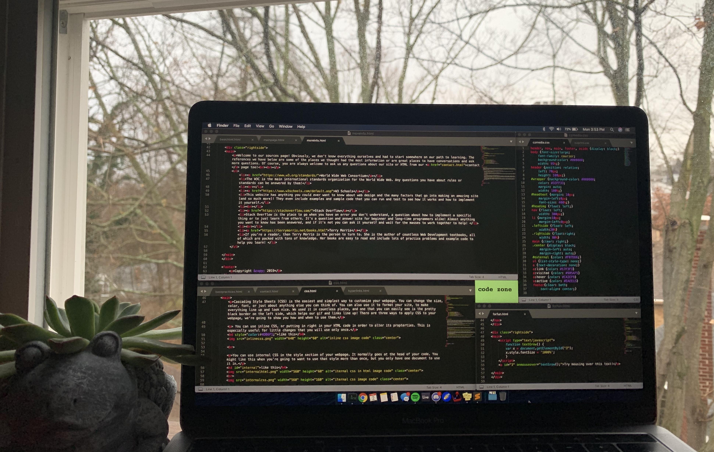

This is some green text and it is about our webpage! We hope that you came here to learn something new about making a website. This is a space for anyone to be curious and discover HTML and all that it can do. As you traverse this site we will teach you everything from the basics to adding a little spice to your site. Please feel free to contact us with any questions too! You are more than welcome to go through the site in any order you like, but if you are new to HTML and looking to build up to more complicated coding, we have organized the pages in more or less of an order from the basic skills needed and up from there.
Here's a fun thing to try, go to one of your favorite websites, right-click on the page and find the option that says "inspect page source" or something along those lines. It's going to open up a new page with the source code for that site! Depending on the site you chose, it will probably be a little bit overwhelming. However, it's still a cool insight into how those sites are built and designed, and that yes, it is made of code and not of magic.